讓計畫自己動起來
MISA 高階主管 AI 實戰營｜第二天 上半場
工具：Google Apps Script
 掃描開啟學員講義cj2vum4.github.io/AIclass/handout.html
掃描開啟學員講義cj2vum4.github.io/AIclass/handout.html本場安排｜180 分鐘
休息另計；AI 執行期間討論應用，完成後立即回到驗收
0′
30′
60′
90′
120′
150′
180′
15′
40′
30′
50′
20′
25′
01
成果與自動化概念
資料、規則、觸發
02
日曆同步與本人授權
任務六、七
03
觸發與結果核對
任務八
04
手機操作入口
任務九；必保成果
05
Skill美化
任務十；落後時改講師示範
06
全段驗收與交接
手機、試算表、日曆一致
每組完成一套，每個人看見可能
帳號本人操作
固定電腦與帳號；登入、授權、金鑰由本人處理。
其他人輪替參與
提出需求、觀察 AI、驗收結果；不交換登入。
帶回公司可復刻
保留資料、完整 prompt、本人步驟與成果；交給沒上課的同事。
本場示範：在手機改一次，資料跟著更新
講師示範使用虛構資料。備援畫面與本次實測要分清楚。
- 先展示一筆任務在試算表與日曆的位置。
- 手機改成已完成，再回到兩邊觀察。
- 各組今天做出同樣效果；不需要先學會程式語法。
講義：每個任務一個完整 prompt
講義網址就是第一頁 QR Code；手機、筆電都能開，不用登入。
- 開啟學員講義（或掃描第一頁 QR Code），找到目前任務。
- 先看「先備好」與「本人操作」。
- 複製 prompt，填好黃色【】後貼給 Claude。
- AI 完成後依驗收條件核對，再接續下一項。
昨天，我們走到了這裡
各組帶來的 OKR／KPI
Excel、Word、PDF、簡報或照片，格式不拘；上傳前先去敏
Claude 讀資料、追問
整理成「目標→關鍵成果→任務→負責人」，資料沒寫清楚的地方先問、不自己猜
年度計畫試算表
固定欄位、部門分頁、9 個任務；日期依本人答覆補齊
請各組用一句話分享：昨天最讓你意外的一件事是什麼？
工具模組
Google Apps Script
Google 內建、免費、免伺服器的自動化工具
Apps Script 是什麼？
- 藏在每一份 Google 試算表裡的自動化引擎
- 「擴充功能」→「Apps Script」就能打開
- 能指揮試算表、日曆、Gmail、雲端硬碟
- 也能連外部服務，例如 LINE
你不需要會寫程式
・程式：Claude 寫
・需求：你說清楚
・執行與授權：你按
・驗收：你看結果對不對
它能做什麼
讀寫試算表
新增、更新、整理資料
建立日曆行程
任務自動排進行事曆
寄信
週報、提醒、通知信
觸發條件
定時執行、有人編輯時執行、表單送出時執行
網頁介面
做一個專屬的操作頁面，手機也能用
串接外部服務
LINE、Slack、各種 API
自動化三要素
示意動畫
| 任務 | 截止 | 負責 | 狀態 |
|---|---|---|---|
| 確認包裝稿 | 11/13 | 林 | 未開始 |
| 官網改版 | 3/31 | 陳 | 進行中 |
| 招募計畫 | 4/15 | 王 | 未開始 |
資料從哪裡讀？
「任務清單」分頁的
開始日、截止日、負責人、狀態
for 每一個任務：
建立或更新日曆行程
if 狀態 = 已完成：
行程標題加
建立或更新日曆行程
if 狀態 = 已完成：
行程標題加
11/13 確認包裝稿
規則做什麼事？
每個任務建立一個日曆行程；
完成的加上
012
07:00
改成已完成
觸發什麼時候做？
每天早上 7 點；
有人把狀態改成「已完成」時
跟 AI 交代自動化，就是把這三件事講清楚。
開工前，每次都看這三件事
每一場開始操作前都看一次；任何一項不對，先停下來處理。
- 帳號：右上角頭像是課程帳號；分頁是本組的試算表或 Apps Script，檔名對得上
- 模型：側邊欄輸入框下方是 Sonnet 5.5、Effort Medium；開新對話要再看一次
- 額度：claude.ai「設定 → 使用量」看「目前工作階段」與「本週」；剩不多先告訴助教
日曆同步示範：同一筆任務要能追得回去
先理解想得到的結果，再讓 AI 寫程式；不逐行教語法。
示意動畫
表任務清單
| 任務 | 截止日 | 狀態 |
|---|---|---|
| 確認包裝稿 | 11/1311/15 | 未開始已完成 |
| 新品試吃 | 11/20 | 未開始 |
曆Google 日曆（同一個事件 ID）
一
二
三
四
五
六
日
10
11
12
13
包裝稿
重複？✗
14
15
包裝稿
包裝稿
16
17
18
19
20
21
22
23
第一次同步一筆任務建立對應事件
原資料不變，重跑一次不重複新增
截止日改變同一事件更新到新日期
任務完成依約定規則顯示完成狀態
任務六
讓任務同步到日曆
約 15 分鐘（估計，含本人操作與核對）
把任務同步到專屬日曆，保留任務與事件的對應。
- 從試算表開啟 Apps Script
- 貼上同步日曆 prompt
- 確認程式已儲存，再進入授權
任務六｜讓任務同步到日曆
任務六｜照這 5 步做
灰字是做完應看到的畫面；對不上就先停，看「卡關怎麼辦」。完整 prompt 在講義。
- 打開昨天的年度計畫試算表，按上方選單「擴充功能」→「Apps Script」應看到：新分頁開啟 Apps Script 編輯器，左邊有「程式碼.gs」，右邊是預設的 myFunction
- 在這個新分頁按 Claude 圖示打開側邊欄（側邊欄跟著分頁走，新分頁要再開一次）；確認模型是 Sonnet應看到：側邊欄出現在 Apps Script 分頁右側
- 講義複製任務六 prompt，把【試算表檔名】換成實際檔名，貼上後按 Enter從講義複製 prompt應看到：Claude 開始改寫程式碼.gs
- 等待約 2 分鐘應看到：程式碼.gs 換成 syncToCalendar；左上專案名稱變成「年度計畫自動化」；Claude 說明尚未執行測試
- 確認已儲存：程式碼.gs 檔名旁沒有未儲存提示；有的話按 Ctrl＋S應看到：程式已儲存，可進入任務七
任務六｜讓任務同步到日曆
AI 工作時，延伸想一想
本人確認事項優先處理；AI 完成就回到成果，不為討論延後進度
應用討論
哪些工作適合排進日曆？
完成後核對
同步後日曆筆數正確；重跑不重複
任務六｜讓任務同步到日曆
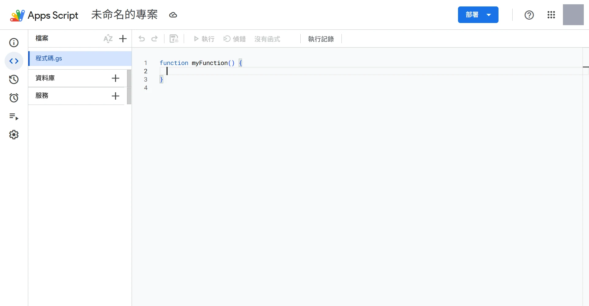
步驟 1／5（1）
新分頁開啟 Apps Script 編輯器：左邊是「程式碼.gs」，右邊是預設的 myFunction
打開昨天的年度計畫試算表，按上方選單「擴充功能」→「Apps Script」
應看到：新分頁開啟 Apps Script 編輯器，左邊有「程式碼.gs」，右邊是預設的 myFunction
任務六｜讓任務同步到日曆
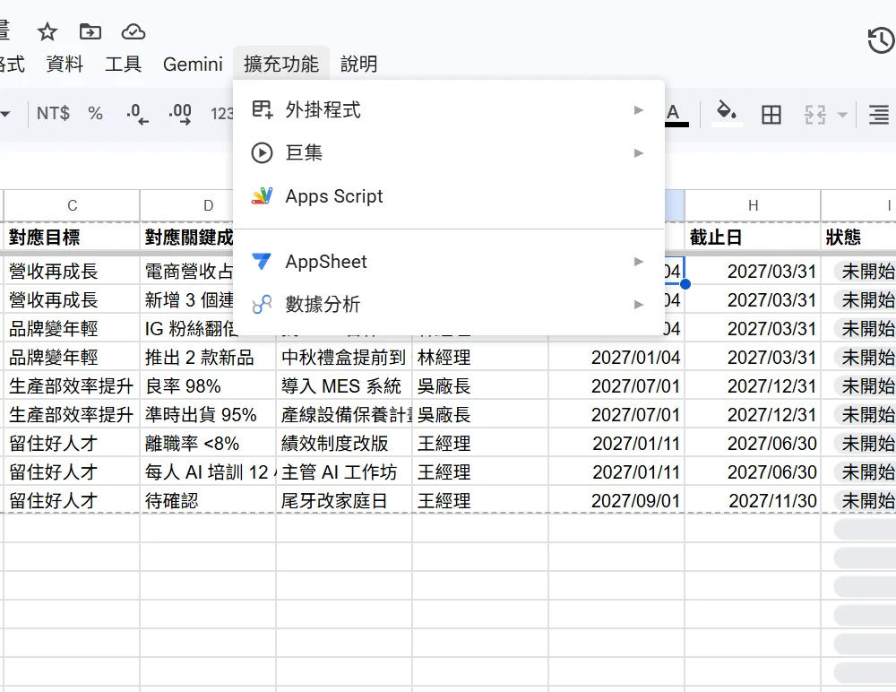
步驟 1／5（2）
在年度計畫試算表按上方「擴充功能」→「Apps Script」
打開昨天的年度計畫試算表，按上方選單「擴充功能」→「Apps Script」
應看到：新分頁開啟 Apps Script 編輯器，左邊有「程式碼.gs」，右邊是預設的 myFunction
任務六｜讓任務同步到日曆
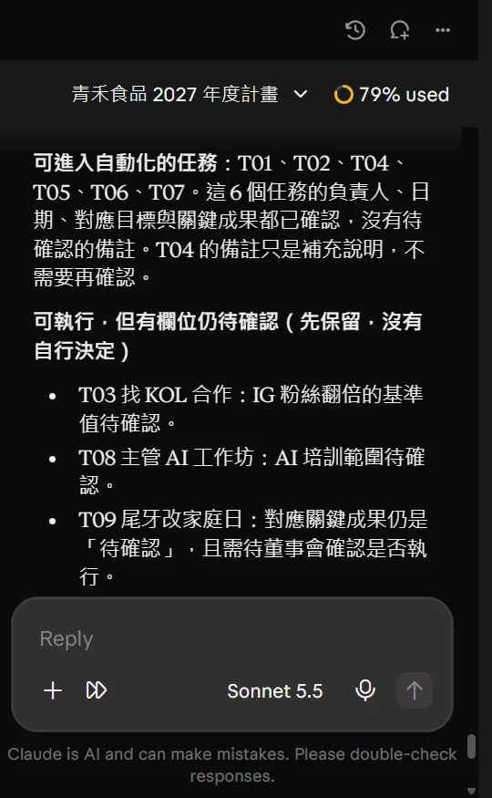
步驟 2／5
在 Apps Script 分頁打開 Claude 側邊欄，確認模型是 Sonnet 5.5
在這個新分頁按 Claude 圖示打開側邊欄（側邊欄跟著分頁走，新分頁要再開一次）；確認模型是 Sonnet
應看到：側邊欄出現在 Apps Script 分頁右側
任務六｜讓任務同步到日曆
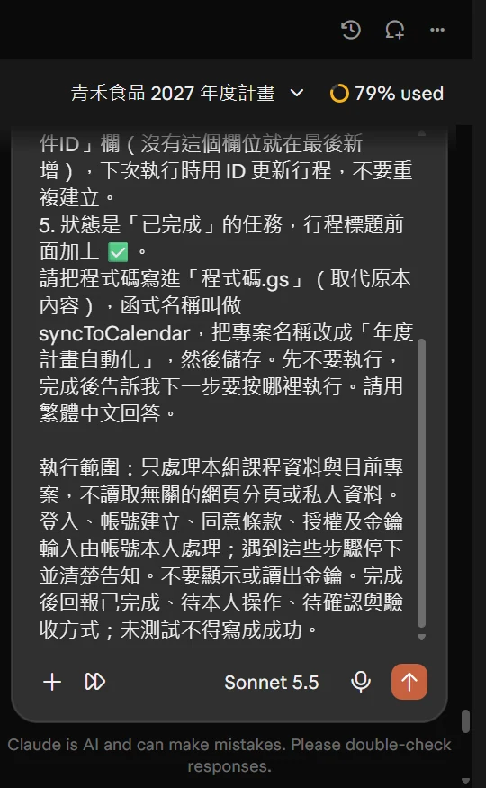
步驟 3／5
把【試算表檔名】換成實際檔名，貼上任務六 prompt 後按 Enter
講義複製任務六 prompt，把【試算表檔名】換成實際檔名，貼上後按 Enter從講義複製 prompt
應看到：Claude 開始改寫程式碼.gs
任務六｜讓任務同步到日曆
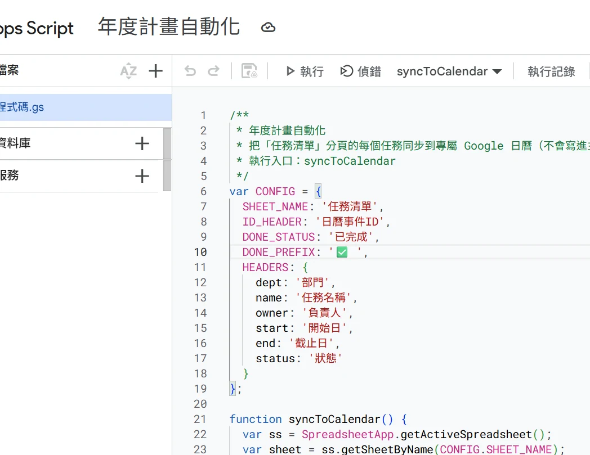
步驟 4／5（1）
約 2 分鐘：程式碼.gs 換成 syncToCalendar，專案名稱變成「年度計畫自動化」
等待約 2 分鐘
應看到：程式碼.gs 換成 syncToCalendar；左上專案名稱變成「年度計畫自動化」；Claude 說明尚未執行測試
任務六｜讓任務同步到日曆
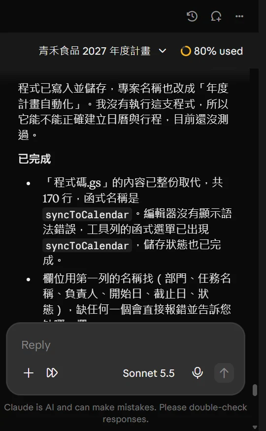
步驟 4／5（2）
Claude 回報已寫入、已儲存，並明說「沒有執行、還沒測過」
等待約 2 分鐘
應看到：程式碼.gs 換成 syncToCalendar；左上專案名稱變成「年度計畫自動化」；Claude 說明尚未執行測試
任務六｜讓任務同步到日曆
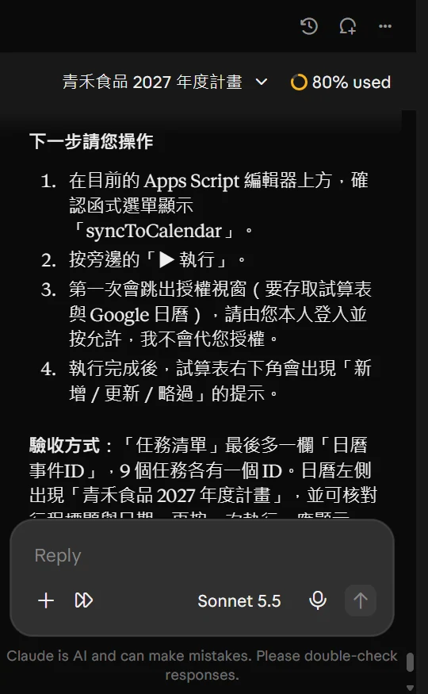
步驟 5／5
Claude 說明下一步：選 syncToCalendar → 按「執行」→ 授權由本人處理
確認已儲存：程式碼.gs 檔名旁沒有未儲存提示；有的話按 Ctrl＋S
應看到：程式已儲存，可進入任務七
任務六｜讓任務同步到日曆
任務六｜卡關怎麼辦？
先對照症狀；卡住 3 分鐘請助教判斷，不要重複貼同一段 prompt。
| 看到這個狀況 | 這樣處理 |
|---|---|
| 「擴充功能」底下沒有 Apps Script | 公司帳號可能被管理員關閉此功能，改用課程帳號。 |
| Claude 寫不進編輯器 | 請它「把完整程式碼貼在對話裡」，按複製；到程式碼.gs 按 Ctrl＋A 全選後貼上，再按 Ctrl＋S。 |
| 開到別的專案 | 看左上專案名稱與網址；一定要從本組試算表的「擴充功能」開啟，不要用舊連結。 |
授權前，先分清楚你正在做哪件事
遇到不認識的專案或不相符權限先停下，請助教協助判讀。
| 畫面或結果 | 本人應確認 |
|---|---|
| 要求存取資料 | 是自己的課程專案，權限符合本次用途 |
| 函式選單 | 選的是syncToCalendar |
| 執行結束 | 看執行紀錄，也看實際日曆 |
| 重新執行 | 同一任務沒有多出一份事件 |
任務七
本人授權，核對日曆結果
約 20 分鐘（估計，含本人操作與核對）
日曆真的出現正確任務，重跑也不會重複建立。
- 本人確認專案與授權範圍
- 執行 syncToCalendar
- 核對專屬日曆，重跑不重複
任務七｜本人授權，核對日曆結果
任務七｜照這 8 步做（1／2）
灰字是做完應看到的畫面；對不上就先停，看「卡關怎麼辦」。完整 prompt 在講義。
- 在 Apps Script 分頁的側邊欄貼上任務七 prompt，按 Enter從講義複製 prompt應看到：Claude 說明核對方式；需要本人按確認時會停下
- 本人Claude 會先確認函式選單是 syncToCalendar 並按「執行」，停在「需要授權」等本人；它沒有按的話，由本人在上方函式選單選 syncToCalendar 後按「執行」。函式選單點不到時：先點開選單，用方向鍵移到目標函式再按 Enter；按「執行」前再看一次選單顯示的名稱應看到：畫面跳出「需要授權」視窗
- 本人依序按「審查權限」→（若出現選擇帳號畫面，選課程帳號）→「Google 尚未驗證這個應用程式」先確認專案名稱與開發人員都是自己，再按「進階」→「前往 年度計畫自動化（不安全）」→ 逐項看懂權限、勾選後按「繼續」應看到：授權視窗關閉，程式自動執行一次
- 看下方「執行記錄」應看到：出現執行完畢與統計（青禾範例：新增 9、更新 0、略過 0）
任務七｜本人授權，核對日曆結果
任務七｜照這 8 步做（2／2）
灰字是做完應看到的畫面；對不上就先停，看「卡關怎麼辦」。完整 prompt 在講義。
- 本人打開 Google 日曆（calendar.google.com），左側「我的日曆」勾選與試算表同名的日曆，切到任務所在月份應看到：任務以全天長條出現，標題是「[部門] 任務名稱（負責人）」
- 回試算表「任務清單」應看到：最後多了「日曆事件ID」欄，每列都有值
- 回 Apps Script 再按一次「執行」應看到：記錄為「新增 0、更新 9」，日曆沒有重複行程
- 在側邊欄告訴 Claude「已執行兩次」，請它核對並列出已驗證與未驗證項目應看到：Claude 依實際記錄回報，不把未測項寫成成功
任務七｜本人授權，核對日曆結果
AI 工作時，延伸想一想
本人確認事項優先處理；AI 完成就回到成果，不為討論延後進度
應用討論
同事復刻時需要知道哪些本人操作？
完成後核對
本人核對授權範圍；執行結果與日曆一致
任務七｜本人授權，核對日曆結果
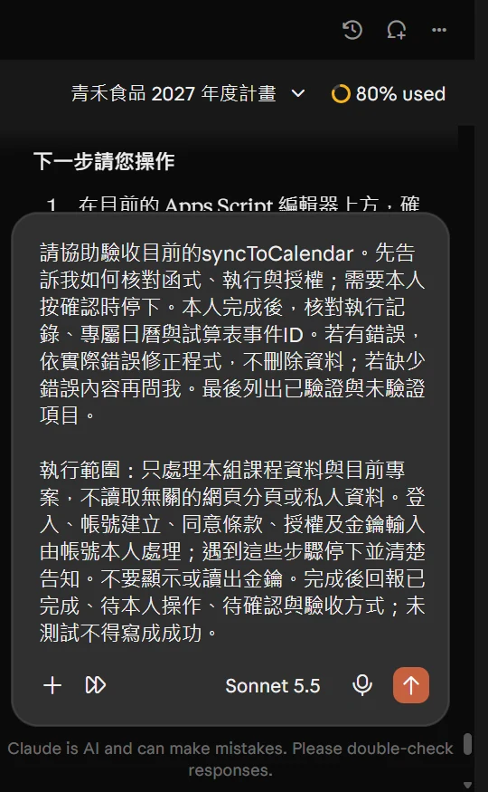
步驟 1／8
在 Apps Script 分頁的側邊欄貼上任務七 prompt，按 Enter
在 Apps Script 分頁的側邊欄貼上任務七 prompt，按 Enter從講義複製 prompt
應看到：Claude 說明核對方式；需要本人按確認時會停下
任務七｜本人授權，核對日曆結果
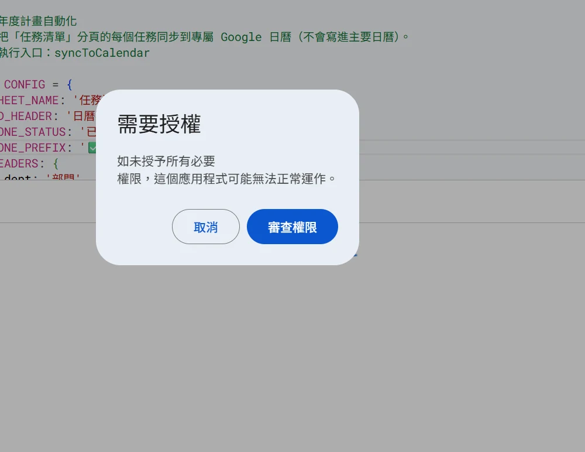
步驟 2／8
第一次執行跳出「需要授權」：按「審查權限」
本人Claude 會先確認函式選單是 syncToCalendar 並按「執行」，停在「需要授權」等本人；它沒有按的話，由本人在上方函式選單選 syncToCalendar 後按「執行」。函式選單點不到時：先點開選單，用方向鍵移到目標函式再按 Enter；按「執行」前再看一次選單顯示的名稱
應看到：畫面跳出「需要授權」視窗
任務七｜本人授權，核對日曆結果

步驟 3／8（1）
看到「Google 尚未驗證這個應用程式」：先別慌，按「進階」
本人依序按「審查權限」→（若出現選擇帳號畫面，選課程帳號）→「Google 尚未驗證這個應用程式」先確認專案名稱與開發人員都是自己，再按「進階」→「前往 年度計畫自動化（不安全）」→ 逐項看懂權限、勾選後按「繼續」
應看到：授權視窗關閉，程式自動執行一次
任務七｜本人授權，核對日曆結果

步驟 3／8（2）
確認是自己的專案，才按「前往 年度計畫自動化（不安全）」
本人依序按「審查權限」→（若出現選擇帳號畫面，選課程帳號）→「Google 尚未驗證這個應用程式」先確認專案名稱與開發人員都是自己，再按「進階」→「前往 年度計畫自動化（不安全）」→ 逐項看懂權限、勾選後按「繼續」
應看到：授權視窗關閉，程式自動執行一次
任務七｜本人授權，核對日曆結果

步驟 3／8（3）
逐項看懂要求的權限（試算表、日曆），勾選後按「繼續」
本人依序按「審查權限」→（若出現選擇帳號畫面，選課程帳號）→「Google 尚未驗證這個應用程式」先確認專案名稱與開發人員都是自己，再按「進階」→「前往 年度計畫自動化（不安全）」→ 逐項看懂權限、勾選後按「繼續」
應看到：授權視窗關閉，程式自動執行一次
任務七｜本人授權，核對日曆結果
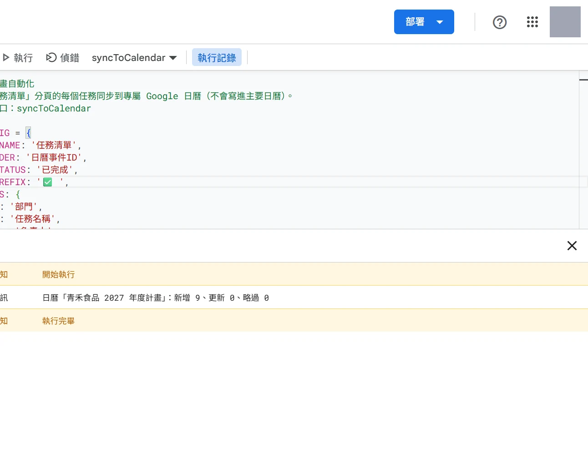
步驟 4／8
下方「執行記錄」：日曆「青禾食品 2027 年度計畫」新增 9、更新 0、略過 0
看下方「執行記錄」
應看到：出現執行完畢與統計（青禾範例：新增 9、更新 0、略過 0）
任務七｜本人授權，核對日曆結果
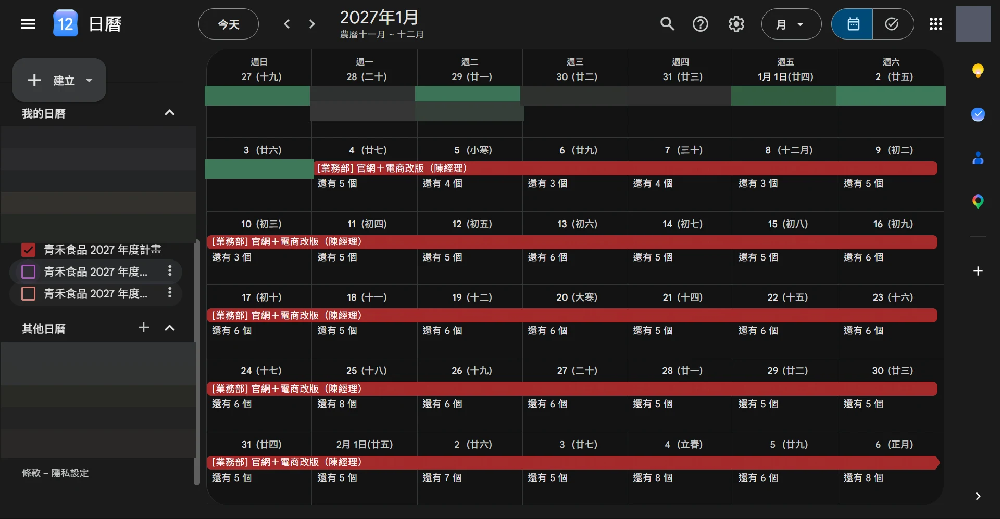
步驟 5／8
Google 日曆勾選「青禾食品 2027 年度計畫」：任務以全天長條出現，標題「[部門] 任務名稱（負責人）」
本人打開 Google 日曆（calendar.google.com），左側「我的日曆」勾選與試算表同名的日曆，切到任務所在月份
應看到：任務以全天長條出現，標題是「[部門] 任務名稱（負責人）」
任務七｜本人授權，核對日曆結果
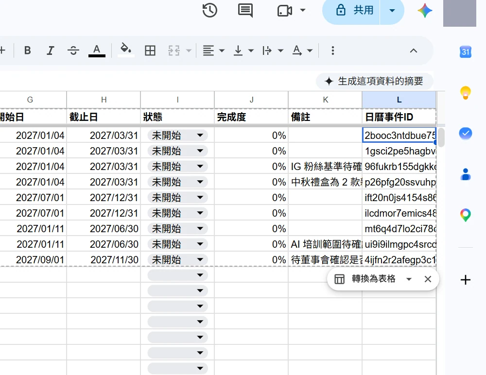
步驟 6／8
回試算表「任務清單」：最後多了「日曆事件ID」欄，每列都有值
回試算表「任務清單」
應看到：最後多了「日曆事件ID」欄，每列都有值
任務七｜本人授權，核對日曆結果
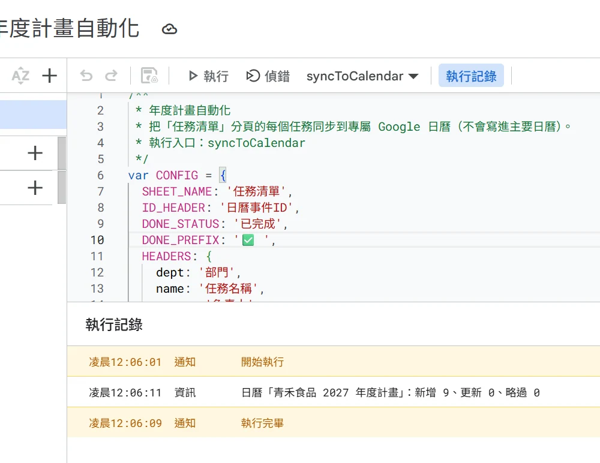
步驟 7／8（1）
回 Apps Script 再按一次「執行」（先確認函式選單是 syncToCalendar）
回 Apps Script 再按一次「執行」
應看到：記錄為「新增 0、更新 9」，日曆沒有重複行程
任務七｜本人授權，核對日曆結果
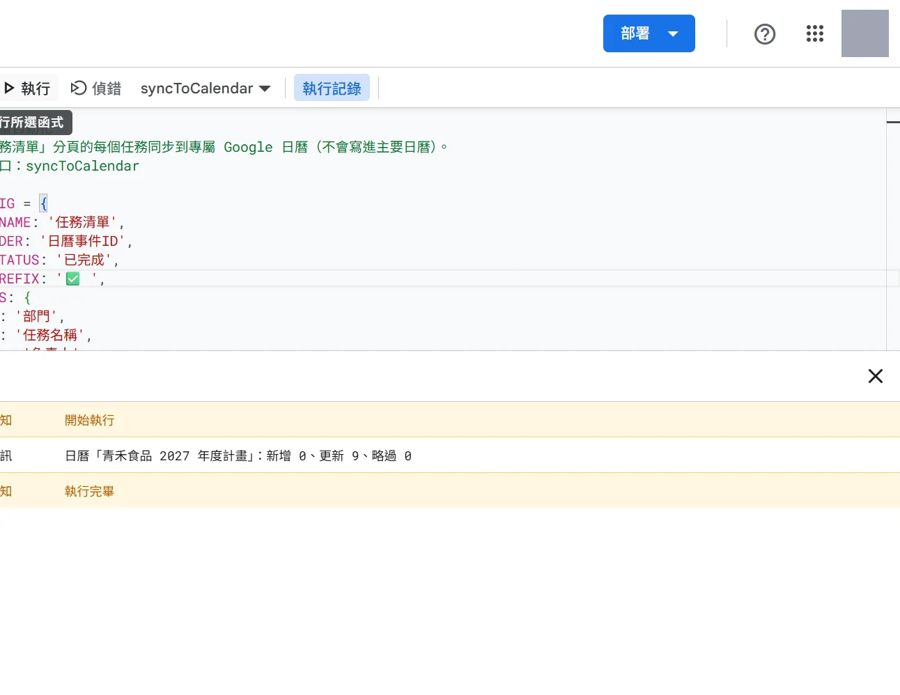
步驟 7／8（2）
重跑結果：新增 0、更新 9，日曆沒有重複行程
回 Apps Script 再按一次「執行」
應看到：記錄為「新增 0、更新 9」，日曆沒有重複行程
任務七｜本人授權，核對日曆結果
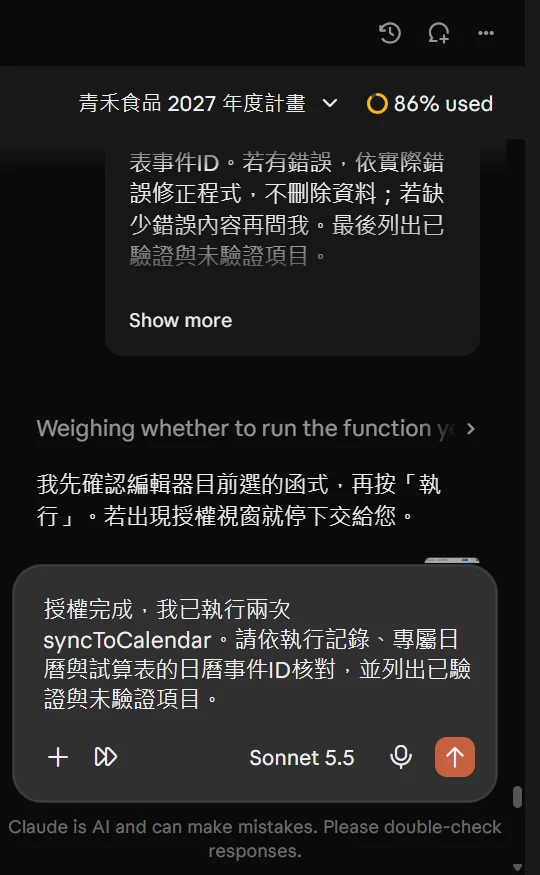
步驟 8／8（1）
在側邊欄告訴 Claude「已執行兩次」，請它核對並列出已驗證與未驗證項目
在側邊欄告訴 Claude「已執行兩次」，請它核對並列出已驗證與未驗證項目
應看到：Claude 依實際記錄回報，不把未測項寫成成功
任務七｜本人授權，核對日曆結果
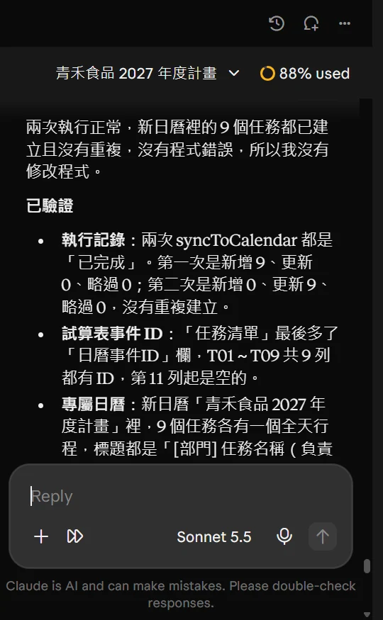
步驟 8／8（2）
Claude 依實際記錄核對：兩次執行、9 個事件 ID、9 個行程，列出已驗證與未驗證項目
在側邊欄告訴 Claude「已執行兩次」，請它核對並列出已驗證與未驗證項目
應看到：Claude 依實際記錄回報，不把未測項寫成成功
任務七｜本人授權，核對日曆結果
任務七｜卡關怎麼辦？（1／2）
先對照症狀；卡住 3 分鐘請助教判斷，不要重複貼同一段 prompt。
| 看到這個狀況 | 這樣處理 |
|---|---|
| 授權視窗沒有跳出 | Chrome 擋了彈出視窗：按網址列右側的提示允許彈出視窗後，再按一次「執行」。 |
| 執行到別的函式 | 先停下來，看執行記錄執行了什麼，貼給 Claude 判斷影響；不要連續重按。 |
| 錯誤訊息說找不到欄位 | 欄位名稱可能被改過。把錯誤訊息貼給 Claude，請它只修這個問題、不刪資料。 |
| 日曆看不到行程 | 確認左側已勾選該日曆，並切到任務日期所在月份。 |
任務七｜本人授權，核對日曆結果
任務七｜卡關怎麼辦？（2／2）
先對照症狀；卡住 3 分鐘請助教判斷，不要重複貼同一段 prompt。
| 看到這個狀況 | 這樣處理 |
|---|---|
| 重跑後出現重複行程 | 不要再執行。把記錄貼給 Claude，請它依「日曆事件ID」修正，不刪除資料。 |
| 核對完發現試算表分頁變成日曆 | Claude 核對日曆時可能借用原本的分頁，重新從雲端硬碟或書籤打開試算表即可。 |
資安③
「Google 尚未驗證這個應用程式」該不該按？
這個畫面本身就是釣魚攻擊最常利用的地方：看到就按「前往」，是最危險的習慣
可以這樣做
- 程式是你自己（或 AI 在你面前）寫的
- 專案名稱、開發人員信箱都是你自己
- 要求的權限和用途對得上（日曆程式要日曆權限）
不要這樣做
- 別人傳來的連結、表單、外掛出現這個畫面
- 開發人員信箱不認識
- 只是要「看資料」，卻要求刪除、寄信、管理帳戶權限
休息 10 分鐘
10:00
點一下數字開始倒數
自動執行的差別：什麼時候才會動？
課堂用可立即觀察的編輯測試；每日排程尚未等到執行就記未測。
| 情境 | 這次要看到的結果 |
|---|---|
| 本人手動執行 | 這次立即同步 |
| 試算表改成已完成 | 編輯觸發後更新相關資料 |
| 到了排程時段 | 時間觸發執行，不保證精確整點 |
| 程式改過但沒測 | 不能據此認定觸發已正常 |
任務八
設定觸發，讓資料自動同步
約 25 分鐘（估計，含本人操作與核對）
每天早上自動同步；在試算表把狀態改成「已完成」時，日曆立刻跟著更新。
- 貼上觸發設定 prompt
- 本人執行 setupTriggers
- 改一筆狀態，核對表格與日曆
任務八｜設定觸發，讓資料自動同步
任務八｜照這 7 步做（1／2）
灰字是做完應看到的畫面；對不上就先停，看「卡關怎麼辦」。完整 prompt 在講義。
- 在側邊欄貼上任務八 prompt，按 Enter從講義複製 prompt應看到：約 3 分鐘後，程式多了 setupTriggers 與處理編輯的函式（實測名稱為 onTaskStatusEdit，以 Claude 回報為準）
- 本人函式選單改選 setupTriggers，確認名稱後按「執行」。函式選單點不到時：先點開選單，用方向鍵移到目標函式再按 Enter；按「執行」前再看一次選單顯示的名稱應看到：可能再次跳出授權：多了新權限是正常的
- 本人如出現授權，依序按「審查權限」→ 選課程帳號 →「Google 尚未驗證這個應用程式」先確認專案名稱與開發人員都是自己，再按「進階」→「前往 年度計畫自動化（不安全）」→ 逐項看懂權限、勾選後按「繼續」應看到：跳出第二次授權（多了管理觸發條件等權限），完成後自動執行一次
- 看「執行記錄」應看到：顯示已建立每日 7–8 點觸發、已建立編輯觸發
任務八｜設定觸發，讓資料自動同步
任務八｜照這 7 步做（2／2）
灰字是做完應看到的畫面；對不上就先停，看「卡關怎麼辦」。完整 prompt 在講義。
- 點左側鬧鐘圖示「觸發條件」應看到：看到兩筆：syncToCalendar（時間驅動）與編輯觸發函式（試算表－編輯時）
- 本人回試算表「任務清單」，挑一筆任務，用狀態欄的下拉選單改成「已完成」（不要打字）應看到：幾秒後該列完成度變成 100%
- 打開 Google 日曆，找到那筆任務應看到：行程標題前面加上 ；沒有新增重複行程
任務八｜設定觸發，讓資料自動同步
AI 工作時，延伸想一想
本人確認事項優先處理；AI 完成就回到成果，不為討論延後進度
應用討論
時間與編輯事件還能觸發哪些工作？
完成後核對
改一筆測試任務為已完成，核對完成度與日曆
任務八｜設定觸發，讓資料自動同步
三種最常用的觸發
示意動畫
07:00 同步日曆
08:00 發提醒
時間驅動
每天、每週、每小時自動執行。例如：每天早上 7 點同步日曆、8 點發提醒
狀態：未開始已完成
包裝稿 包裝稿
編輯時
有人改了試算表就執行。例如：狀態改成「已完成」，日曆立刻打勾
請假單送出
通知主管
表單送出時
Google 表單有新回覆就執行。例如：請假單送出，自動通知主管
任務八｜設定觸發，讓資料自動同步
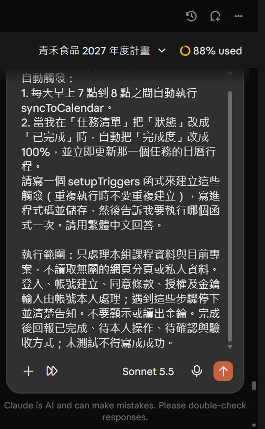
步驟 1／7（1）
在側邊欄貼上任務八 prompt，按 Enter
在側邊欄貼上任務八 prompt，按 Enter從講義複製 prompt
應看到：約 3 分鐘後，程式多了 setupTriggers 與處理編輯的函式（實測名稱為 onTaskStatusEdit，以 Claude 回報為準）
任務八｜設定觸發，讓資料自動同步
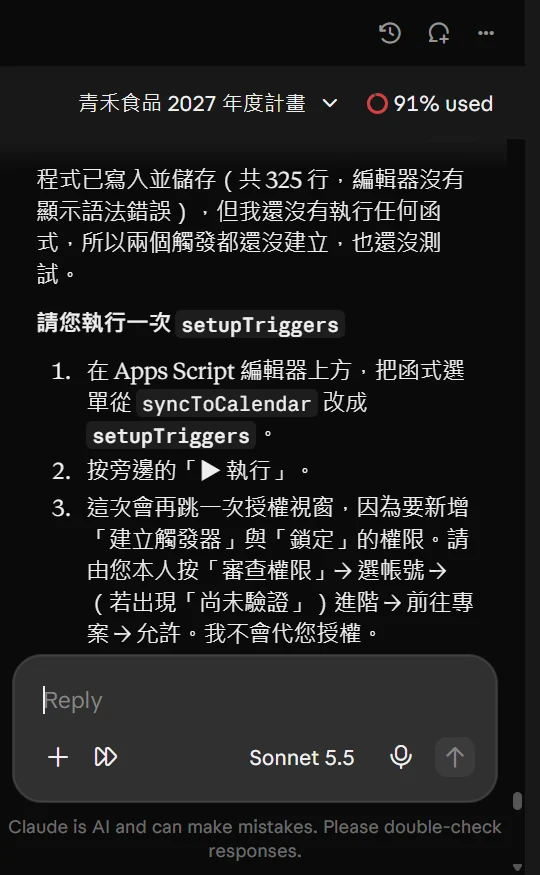
步驟 1／7（2）
約 2 分鐘：多了 setupTriggers 與處理編輯的 onTaskEdit；Claude 明說還沒執行、觸發還沒建立
在側邊欄貼上任務八 prompt，按 Enter從講義複製 prompt
應看到：約 3 分鐘後，程式多了 setupTriggers 與處理編輯的函式（實測名稱為 onTaskStatusEdit，以 Claude 回報為準）
任務八｜設定觸發，讓資料自動同步
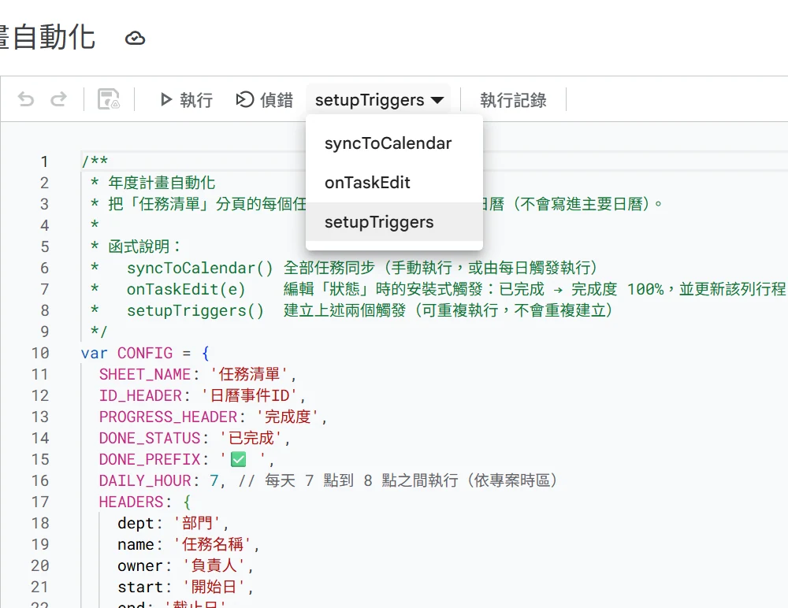
步驟 2／7
函式選單改選 setupTriggers（點不到時用方向鍵選，再按 Enter）
本人函式選單改選 setupTriggers，確認名稱後按「執行」。函式選單點不到時：先點開選單，用方向鍵移到目標函式再按 Enter；按「執行」前再看一次選單顯示的名稱
應看到：可能再次跳出授權：多了新權限是正常的
任務八｜設定觸發，讓資料自動同步

步驟 3／7（1）
看到「Google 尚未驗證這個應用程式」：先別慌，按「進階」
本人如出現授權，依序按「審查權限」→ 選課程帳號 →「Google 尚未驗證這個應用程式」先確認專案名稱與開發人員都是自己，再按「進階」→「前往 年度計畫自動化（不安全）」→ 逐項看懂權限、勾選後按「繼續」
應看到：跳出第二次授權（多了管理觸發條件等權限），完成後自動執行一次
任務八｜設定觸發，讓資料自動同步
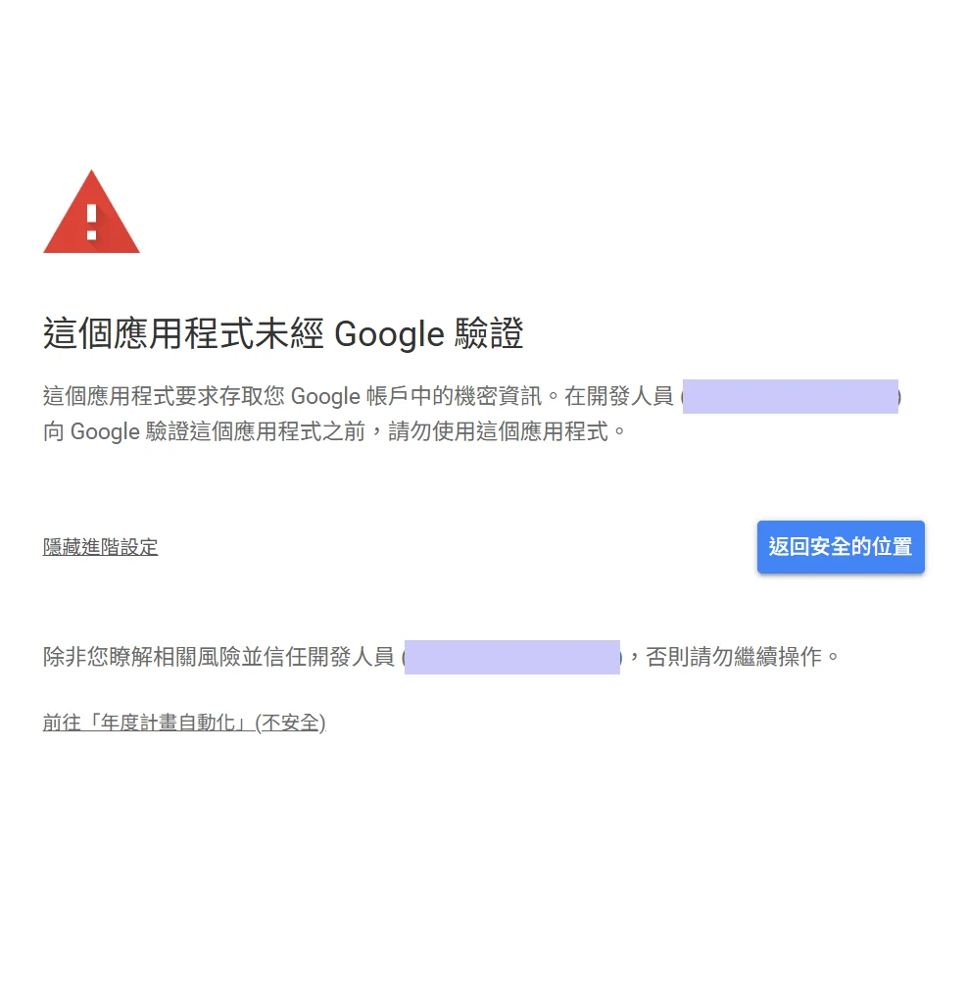
步驟 3／7（2）
確認是自己的專案，才按「前往 年度計畫自動化（不安全）」
本人如出現授權，依序按「審查權限」→ 選課程帳號 →「Google 尚未驗證這個應用程式」先確認專案名稱與開發人員都是自己，再按「進階」→「前往 年度計畫自動化（不安全）」→ 逐項看懂權限、勾選後按「繼續」
應看到：跳出第二次授權（多了管理觸發條件等權限），完成後自動執行一次
任務八｜設定觸發，讓資料自動同步
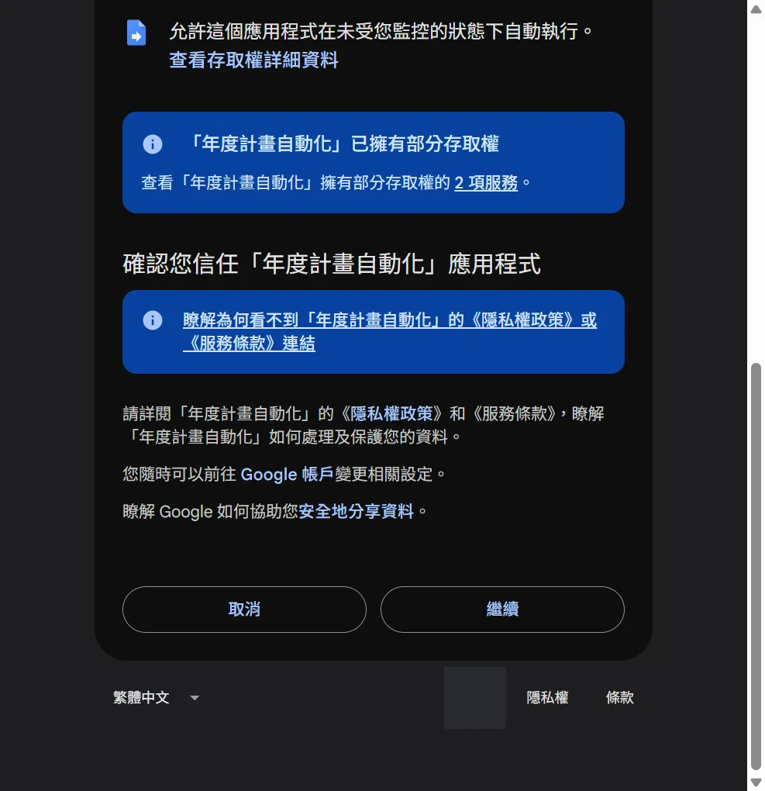
步驟 3／7（3）
逐項看懂要求的權限（試算表、日曆），勾選後按「繼續」
本人如出現授權，依序按「審查權限」→ 選課程帳號 →「Google 尚未驗證這個應用程式」先確認專案名稱與開發人員都是自己，再按「進階」→「前往 年度計畫自動化（不安全）」→ 逐項看懂權限、勾選後按「繼續」
應看到：跳出第二次授權（多了管理觸發條件等權限），完成後自動執行一次
任務八｜設定觸發，讓資料自動同步
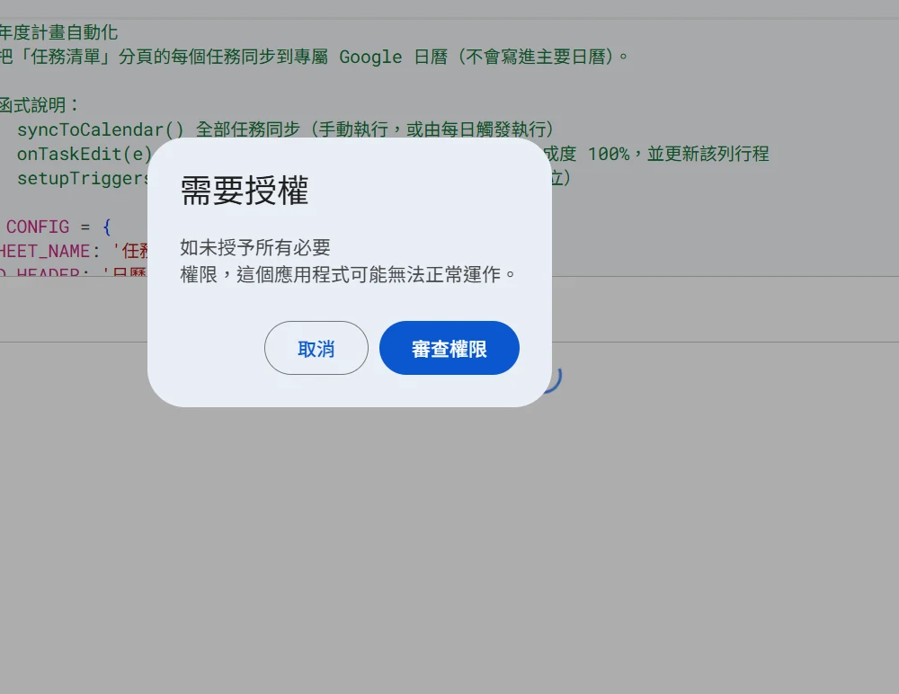
步驟 3／7（4）
第一次執行跳出「需要授權」：按「審查權限」
本人如出現授權，依序按「審查權限」→ 選課程帳號 →「Google 尚未驗證這個應用程式」先確認專案名稱與開發人員都是自己，再按「進階」→「前往 年度計畫自動化（不安全）」→ 逐項看懂權限、勾選後按「繼續」
應看到：跳出第二次授權（多了管理觸發條件等權限），完成後自動執行一次
任務八｜設定觸發，讓資料自動同步
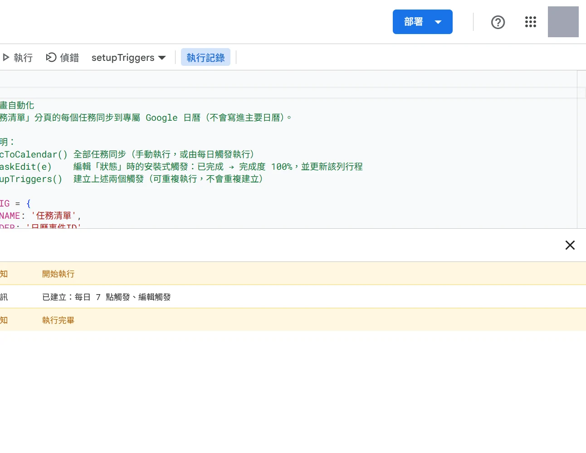
步驟 4／7
執行記錄：已建立每日 7 點觸發、編輯觸發
看「執行記錄」
應看到：顯示已建立每日 7–8 點觸發、已建立編輯觸發
任務八｜設定觸發，讓資料自動同步
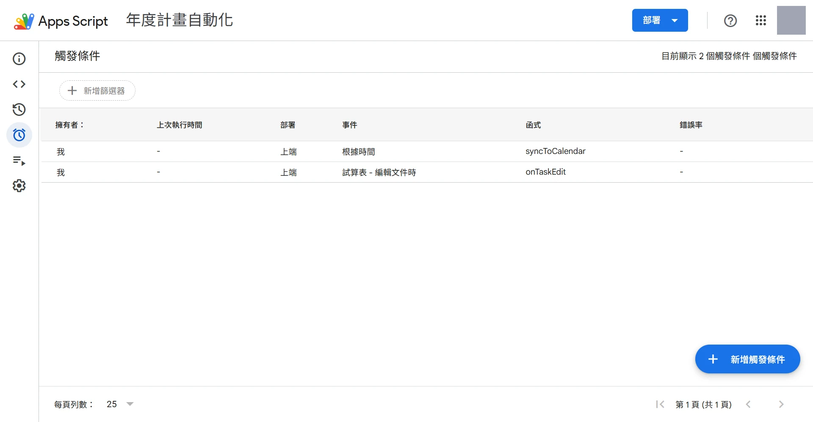
步驟 5／7
左側鬧鐘圖示「觸發條件」：兩筆——syncToCalendar（根據時間）與 onTaskEdit（試算表－編輯文件時）
點左側鬧鐘圖示「觸發條件」
應看到：看到兩筆：syncToCalendar（時間驅動）與編輯觸發函式（試算表－編輯時）
任務八｜設定觸發，讓資料自動同步
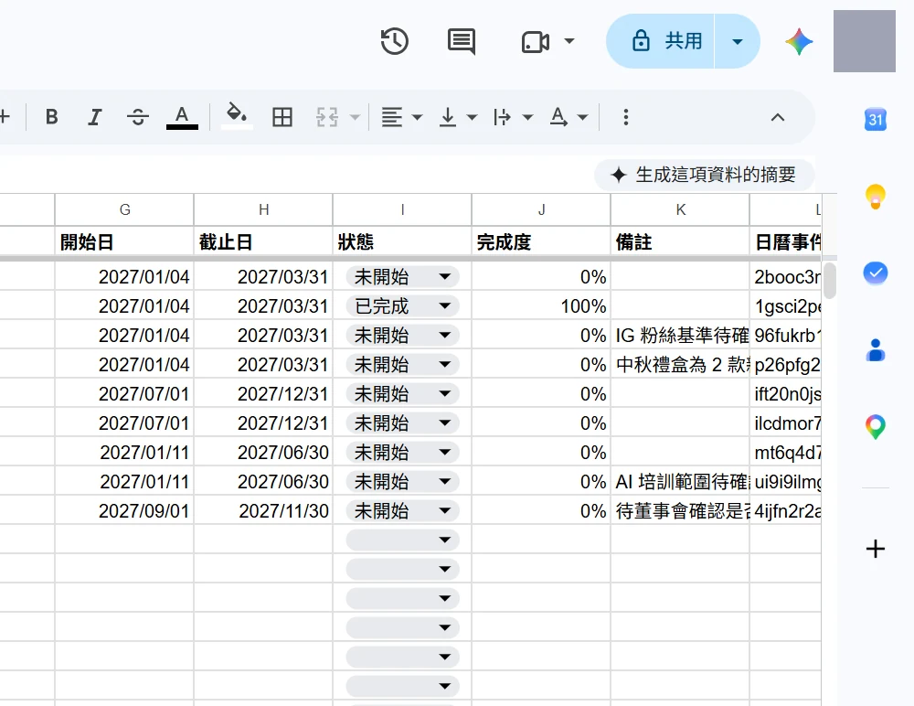
步驟 6／7
驗收：用狀態下拉選單把 T02 改成「已完成」，幾秒後完成度自動變 100%
本人回試算表「任務清單」，挑一筆任務，用狀態欄的下拉選單改成「已完成」（不要打字）
應看到：幾秒後該列完成度變成 100%
任務八｜設定觸發，讓資料自動同步
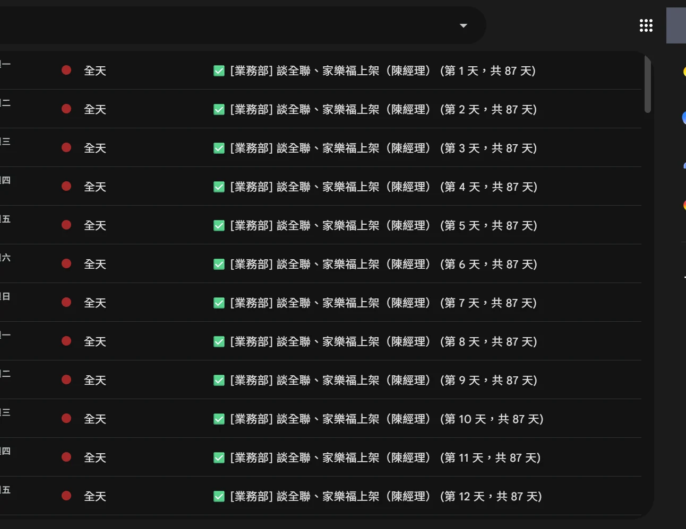
步驟 7／7
打開 Google 日曆找到那筆任務：行程標題前加上 ，沒有新增重複行程
打開 Google 日曆，找到那筆任務
應看到：行程標題前面加上 ；沒有新增重複行程
任務八｜設定觸發，讓資料自動同步
任務八｜卡關怎麼辦？（1／2）
先對照症狀；卡住 3 分鐘請助教判斷，不要重複貼同一段 prompt。
| 看到這個狀況 | 這樣處理 |
|---|---|
| 改了狀態卻沒反應 | 確認改的是「任務清單」而不是部門分頁（部門分頁是公式）；等 10 秒重新整理，再看 Apps Script 左側「執行項目」有沒有錯誤。 |
| 觸發條件出現重複的列 | setupTriggers 跑了不只一次。請 Claude 修正為不重複建立，多餘的觸發由本人在觸發條件頁刪除。 |
| 每日同步不是剛好 7 點 | Google 的時間觸發只保證在該小時內執行，不保證整點。 |
| 想把測試任務改回未完成 | 用下拉選單改回；日曆標題的 是否移除未在課堂驗證，可再執行一次 syncToCalendar 讓日曆跟上。 |
任務八｜設定觸發，讓資料自動同步
任務八｜卡關怎麼辦？（2／2）
先對照症狀；卡住 3 分鐘請助教判斷，不要重複貼同一段 prompt。
| 看到這個狀況 | 這樣處理 |
|---|---|
| 函式選單裡找不到 setupTriggers | Claude 寫完程式後編輯器清單可能沒更新：重新整理 Apps Script 分頁，再打開函式選單。 |
手機入口：從一個動作觀察三個畫面
這是本場必保成果。每組由一人操作，另一人核對資料。
示意動畫
青禾｜我的任務
✓確認新品包裝稿
林經理・11/13
林經理・11/13
新品試吃排程
林經理・11/20
林經理・11/20
✓ 已儲存
2試算表
| 任務 | 負責 | 狀態 | 完成度 |
|---|---|---|---|
| 確認包裝稿 | 林 | 未開始已完成 | 0%100% |
| 新品試吃 | 林 | 未開始 | 0% |
3日曆
一
二
三
四
五
六
日
10
11
12
13
包裝稿
包裝稿
14
15
16
本人手機打開入口使用自己的授權帳號
把一筆任務改成已完成畫面顯示儲存成功
回到試算表同一筆任務狀態更新
再看日曆同一事件依規則更新
任務九
建立手機操作入口
約 40 分鐘（估計，含本人操作與核對）
不用打開試算表，手機點開網址就能看自己的任務、打勾完成、更新進度。
- 貼上手機入口 prompt
- 部署為只有自己可存取
- 手機改一筆資料，核對同步結果
任務九｜建立手機操作入口
任務九｜照這 10 步做（1／2）
灰字是做完應看到的畫面；對不上就先停，看「卡關怎麼辦」。完整 prompt 在講義。
- 在側邊欄貼上任務九 prompt，按 Enter從講義複製 prompt應看到：約 4～10 分鐘後（11/12 實測約 10 分鐘），多了 index.html 與 doGet（Claude 可能另建 WebApp.gs）；Claude 停下來等本人授權或部署
- 本人如 Claude 請你授權，依序按「審查權限」→ 選課程帳號 →「Google 尚未驗證這個應用程式」先確認專案名稱與開發人員都是自己，再按「進階」→「前往 年度計畫自動化（不安全）」→ 逐項看懂權限、勾選後按「繼續」應看到：授權完成
- 本人按右上「部署」→「新增部署作業」應看到：出現部署設定視窗
- 本人按「選取類型」旁的齒輪 →「網頁應用程式」應看到：出現說明、執行身分、誰可以存取三個欄位
- 本人說明填「操作入口」；執行身分維持「我」；「誰可以存取」選「只有我自己」→ 按「部署」應看到：顯示部署成功與「網頁應用程式」網址（/exec 結尾）
任務九｜建立手機操作入口
任務九｜照這 10 步做（2／2）
灰字是做完應看到的畫面；對不上就先停，看「卡關怎麼辦」。完整 prompt 在講義。
- 按網址旁的「複製」，再按「完成」；用電腦開新分頁貼上網址應看到：看到操作入口；選負責人後列出他的任務
- 本人把網址傳到自己手機（例如 LINE 傳給自己），用 Chrome 或 Safari 開啟，登入同一個 Google 帳號應看到：手機上看到同一個入口，字夠大
- 本人選一位負責人，把一筆任務的完成度拖到 50%，按「儲存」應看到：狀態自動變成「進行中」，畫面顯示已儲存並同步（實測：已儲存並同步 1 項任務）
- 回電腦核對試算表與日曆；測完把這筆拖回原值並儲存應看到：試算表完成度與狀態都已更新
- 在側邊欄告訴 Claude 測試結果，請它核對試算表並列出未驗證項目應看到：Claude 依試算表實際內容回報
任務九｜建立手機操作入口
AI 工作時，延伸想一想
本人確認事項優先處理；AI 完成就回到成果，不為討論延後進度
應用討論
哪些工作可以改成手機上的簡單入口？
完成後核對
本人手機可開啟，儲存後表格與日曆同步
任務九｜建立手機操作入口
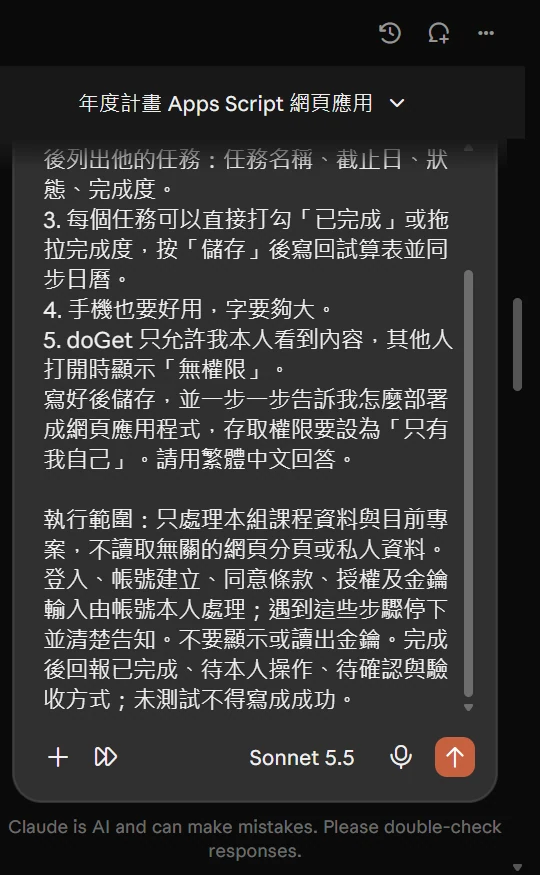
步驟 1／10（1）
在側邊欄貼上任務九 prompt，按 Enter
在側邊欄貼上任務九 prompt，按 Enter從講義複製 prompt
應看到：約 4～10 分鐘後（11/12 實測約 10 分鐘），多了 index.html 與 doGet（Claude 可能另建 WebApp.gs）；Claude 停下來等本人授權或部署
任務九｜建立手機操作入口
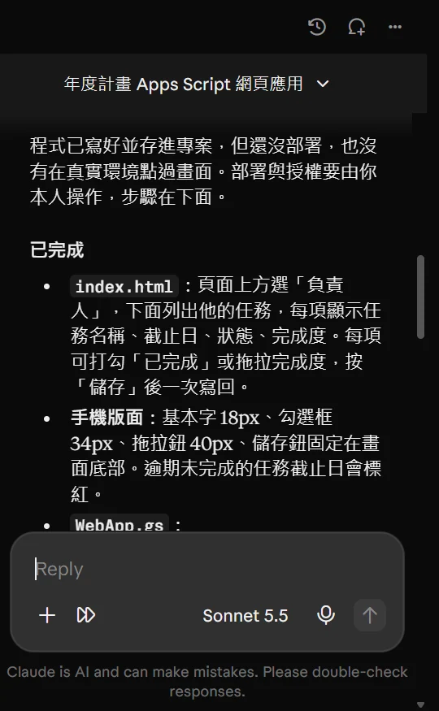
步驟 1／10（2）
約 10 分鐘：多了 index.html 與 doGet；Claude 停在部署前，部署與授權由本人操作
在側邊欄貼上任務九 prompt，按 Enter從講義複製 prompt
應看到：約 4～10 分鐘後（11/12 實測約 10 分鐘），多了 index.html 與 doGet（Claude 可能另建 WebApp.gs）；Claude 停下來等本人授權或部署
任務九｜建立手機操作入口
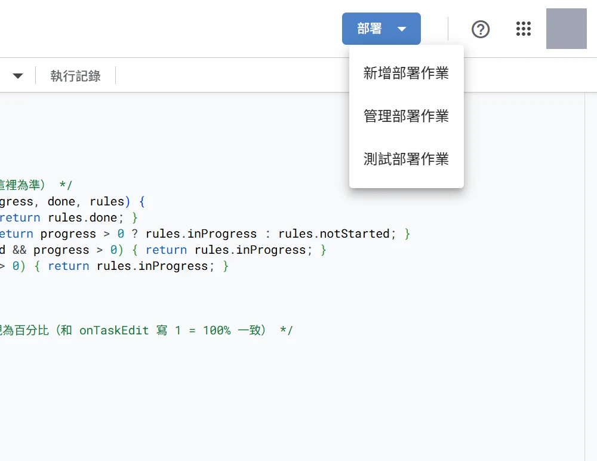
步驟 3／10
按右上「部署」→「新增部署作業」
本人按右上「部署」→「新增部署作業」
應看到：出現部署設定視窗
任務九｜建立手機操作入口
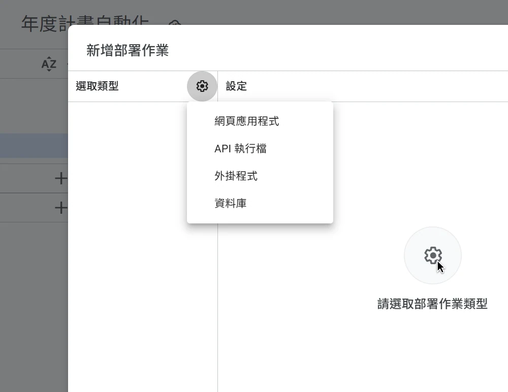
步驟 4／10
按「選取類型」旁的齒輪 →「網頁應用程式」
本人按「選取類型」旁的齒輪 →「網頁應用程式」
應看到：出現說明、執行身分、誰可以存取三個欄位
任務九｜建立手機操作入口
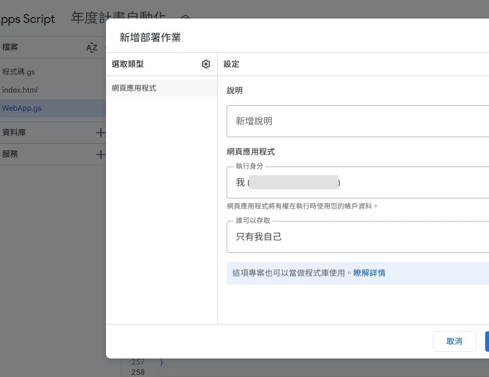
步驟 5／10
說明填「操作入口」；執行身分維持「我」；「誰可以存取」選「只有我自己」→ 按「部署」
本人說明填「操作入口」；執行身分維持「我」；「誰可以存取」選「只有我自己」→ 按「部署」
應看到：顯示部署成功與「網頁應用程式」網址（/exec 結尾）
任務九｜建立手機操作入口
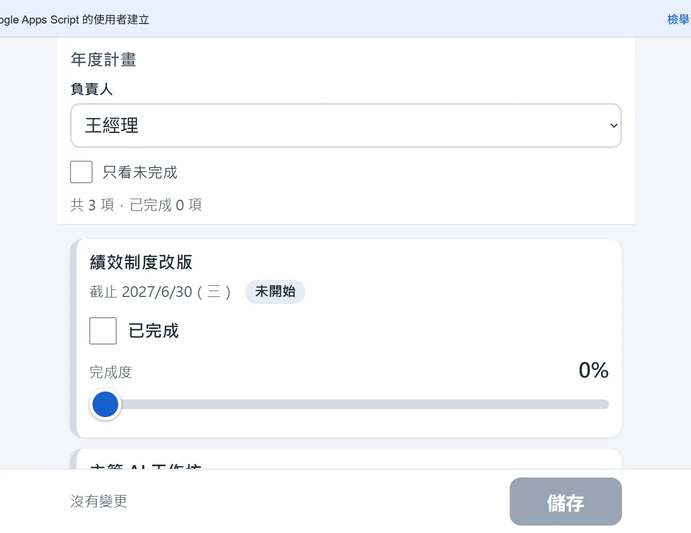
步驟 6／10（1）
用電腦開新分頁貼上網址：看到操作入口，選負責人後列出他的任務
按網址旁的「複製」，再按「完成」；用電腦開新分頁貼上網址
應看到：看到操作入口；選負責人後列出他的任務
任務九｜建立手機操作入口
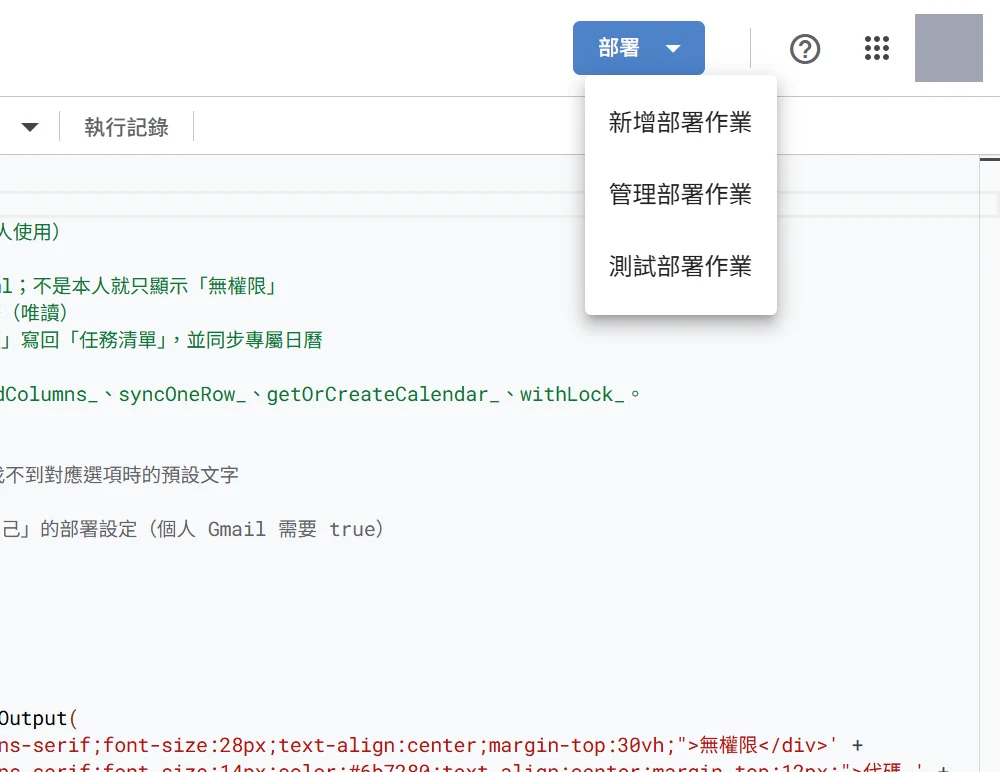
步驟 6／10（2）
更新網頁：按「部署」→「管理部署作業」
按網址旁的「複製」，再按「完成」；用電腦開新分頁貼上網址
應看到：看到操作入口；選負責人後列出他的任務
任務九｜建立手機操作入口
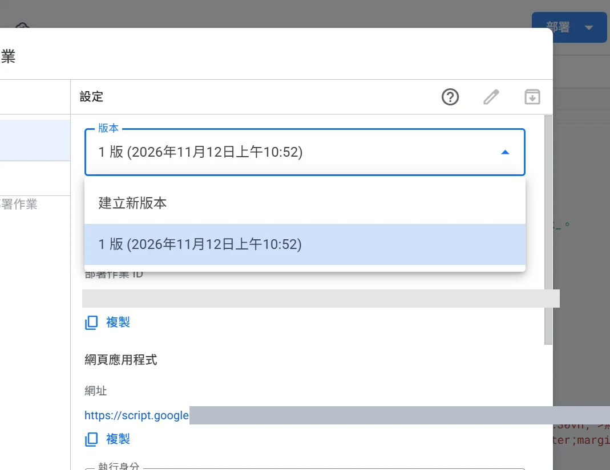
步驟 6／10（3）
在部署作業按鉛筆「編輯」→「版本」選「建立新版本」
按網址旁的「複製」，再按「完成」；用電腦開新分頁貼上網址
應看到：看到操作入口；選負責人後列出他的任務
任務九｜建立手機操作入口
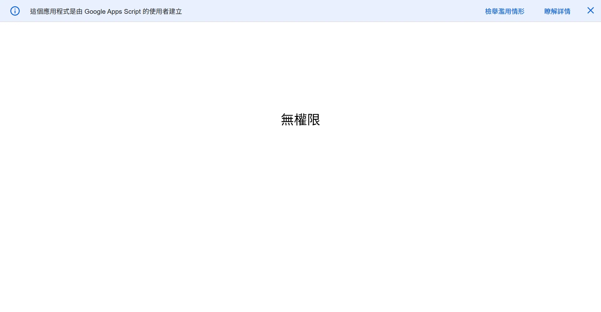
步驟 6／10（4）
實測：本人第一次打開入口卻顯示「無權限」——Claude 寫的本人檢查太嚴；把狀況告訴 Claude 修正後，再更新部署
按網址旁的「複製」，再按「完成」；用電腦開新分頁貼上網址
應看到：看到操作入口；選負責人後列出他的任務
任務九｜建立手機操作入口
步驟 6／10（5）
更新完成：版本號加 1，網址不變
按網址旁的「複製」，再按「完成」；用電腦開新分頁貼上網址
應看到：看到操作入口；選負責人後列出他的任務
任務九｜建立手機操作入口
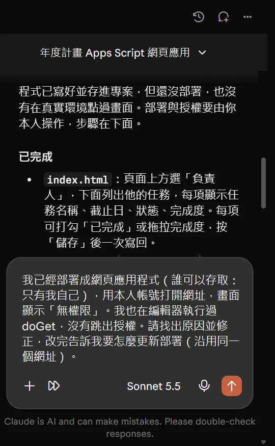
步驟 6／10（6）
入口顯示「無權限」時：把看到的狀況原文告訴 Claude，請它找原因修正
按網址旁的「複製」，再按「完成」；用電腦開新分頁貼上網址
應看到：看到操作入口；選負責人後列出他的任務
任務九｜建立手機操作入口
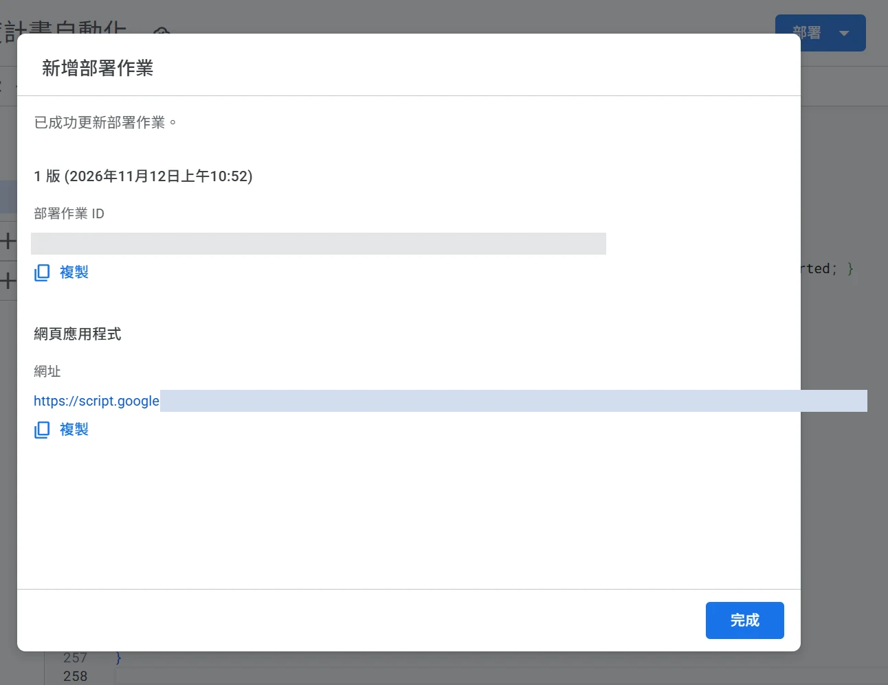
步驟 6／10（7）
部署完成：按「網頁應用程式」網址旁的「複製」，再按「完成」
按網址旁的「複製」，再按「完成」；用電腦開新分頁貼上網址
應看到：看到操作入口；選負責人後列出他的任務
任務九｜建立手機操作入口
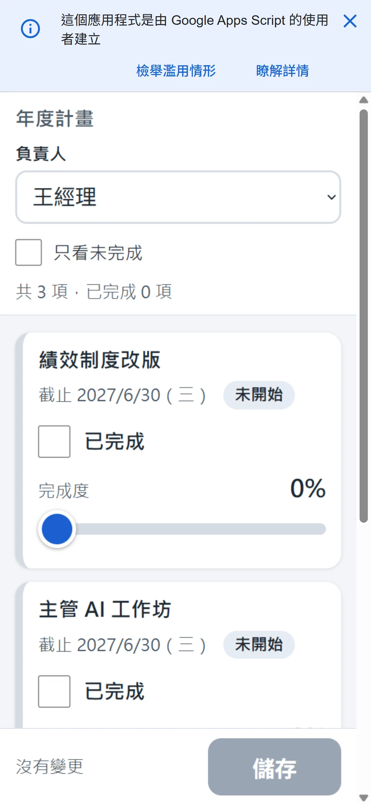
步驟 7／10
手機打開同一個入口：選「王經理」列出他的任務
本人把網址傳到自己手機（例如 LINE 傳給自己），用 Chrome 或 Safari 開啟，登入同一個 Google 帳號
應看到：手機上看到同一個入口，字夠大
任務九｜建立手機操作入口
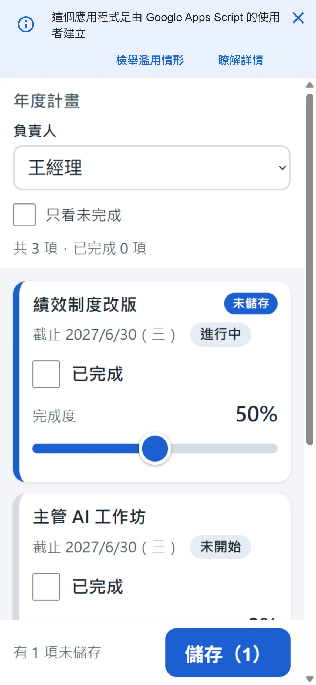
步驟 8／10（1）
把「績效制度改版」的完成度拖到 50%：狀態自動變「進行中」
本人選一位負責人，把一筆任務的完成度拖到 50%，按「儲存」
應看到：狀態自動變成「進行中」，畫面顯示已儲存並同步（實測：已儲存並同步 1 項任務）
任務九｜建立手機操作入口
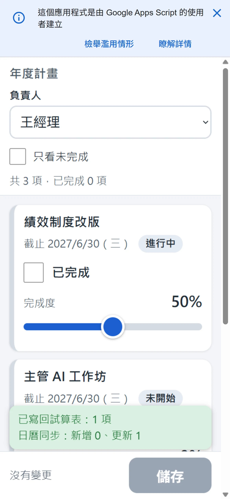
步驟 8／10（2）
按「儲存」：畫面顯示已儲存並同步，試算表與日曆跟著更新
本人選一位負責人，把一筆任務的完成度拖到 50%，按「儲存」
應看到：狀態自動變成「進行中」，畫面顯示已儲存並同步（實測：已儲存並同步 1 項任務）
任務九｜建立手機操作入口
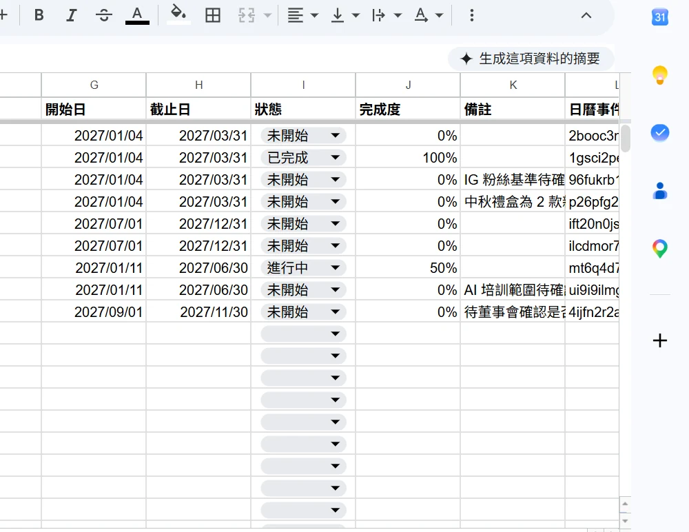
步驟 9／10
回電腦核對試算表：T07 狀態「進行中」、完成度 50%
回電腦核對試算表與日曆；測完把這筆拖回原值並儲存
應看到：試算表完成度與狀態都已更新
任務九｜建立手機操作入口
任務九｜卡關怎麼辦？（1／2）
先對照症狀；卡住 3 分鐘請助教判斷，不要重複貼同一段 prompt。
| 看到這個狀況 | 這樣處理 |
|---|---|
| Claude 說無法操作入口畫面 | 正常：入口在內層畫面，Claude 讀得到、按不到。儲存測試由本人完成。 |
| 手機顯示無權限或要求登入 | 手機瀏覽器沒登入同一個帳號。在 LINE 裡點網址會用內建瀏覽器，改用 Chrome 或 Safari 開啟。 |
| 電腦同時登入多個 Google 帳號而打不開 | 改用只登入課程帳號的視窗開啟網址。 |
| 儲存後試算表沒變 | 確認開的是這次部署的網址；舊網址可能指向別的專案。 |
任務九｜建立手機操作入口
任務九｜卡關怎麼辦？（2／2）
先對照症狀；卡住 3 分鐘請助教判斷，不要重複貼同一段 prompt。
| 看到這個狀況 | 這樣處理 |
|---|---|
| 改了程式但畫面沒變 | 部署的是固定版本，需要「管理部署作業」建立新版本，見任務十。 |
| 本人打開入口卻顯示「無權限」 | 把畫面上的字原文告訴 Claude（實測 11/12：它寫的本人檢查在個人 Gmail 讀不到信箱就拒絕）。它修正後，用「部署 → 管理部署作業 → 編輯 → 建立新版本」更新，網址不變。 |
手機上的操作入口
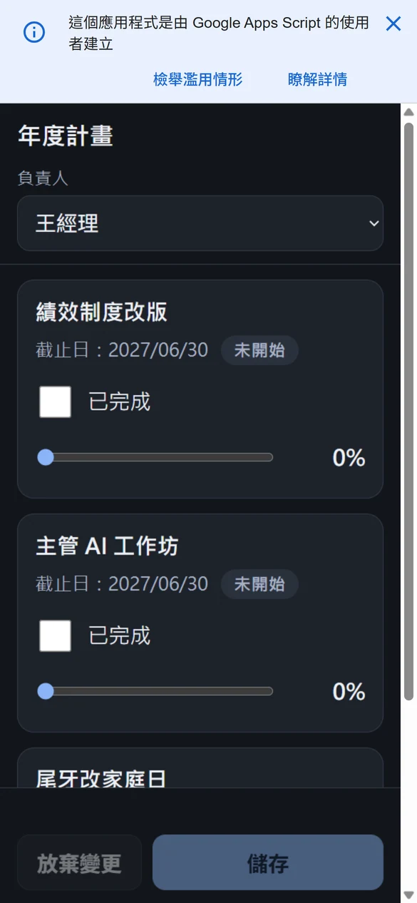
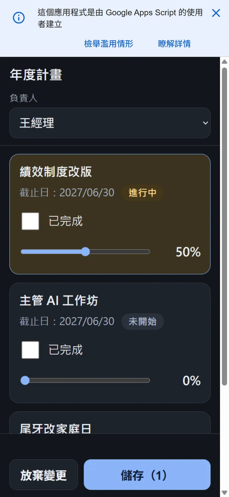
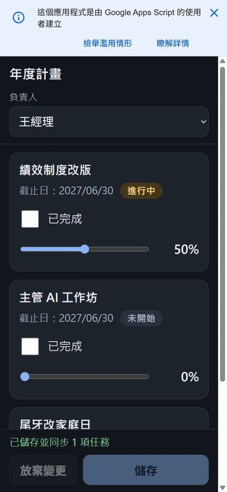
介面改版：先決定什麼叫做更好用
進度落後時改成講師示範，仍保留手機入口功能驗收。
| 比較項目 | 改版後再做一次 |
|---|---|
| 閱讀 | 手機上能看清任務、負責人與日期 |
| 操作 | 完成按鈕容易找到，不誤按 |
| 回饋 | 知道儲存成功或失敗 |
| 功能 | 原本的更新與同步仍正常 |
任務十
用 Skill 改善操作介面
約 15 分鐘（估計，含本人操作與核對）
功能對了，外觀還不夠專業？載入專業設計的 Skill，讓 AI 用設計師的標準重做。
- 確認可用設計 Skill
- 貼上改版 prompt
- 更新部署，再測一次原功能
任務十｜用 Skill 改善操作介面
任務十｜照這 7 步做（1／2）
灰字是做完應看到的畫面；對不上就先停，看「卡關怎麼辦」。完整 prompt 在講義。
- 在側邊欄按輸入框左下「＋」→「Skills」，選設計類 Skill（例如 design）；清單裡沒有就跳到下一步，直接貼 prompt應看到：輸入框出現 /design；實測 11/12 這個帳號沒有設計類 Skill，改用備援做法
- 講義複製任務十 prompt，把風格【】換成你要的樣子，接在 /design 後面貼上，按 Enter從講義複製 prompt應看到：Claude 載入設計 Skill，開始改 index.html
- 等待約 5 分鐘應看到：Claude 回報只改外觀，並確認 google.script.run 呼叫與元件沒有變動
- 本人按「部署」→「管理部署作業」→ 選操作入口那一筆 → 右上鉛筆「編輯」應看到：出現版本設定
任務十｜用 Skill 改善操作介面
任務十｜照這 7 步做（2／2）
灰字是做完應看到的畫面；對不上就先停，看「卡關怎麼辦」。完整 prompt 在講義。
- 本人「版本」選「建立新版本」→ 按「部署」應看到：版本號加 1，網址不變
- 手機重新整理入口網址應看到：看到新設計；深色模式手機也能閱讀
- 本人回歸測試：選負責人、拖一筆完成度、按「儲存」，再核對試算表；測完改回原值應看到：美化後查看、拖拉、儲存仍正常
任務十｜用 Skill 改善操作介面
AI 工作時，延伸想一想
本人確認事項優先處理；AI 完成就回到成果，不為討論延後進度
應用討論
哪些專業做法值得整理成可重用指引？
完成後核對
美化後仍可查看、打勾、儲存；網址沿用
任務十｜用 Skill 改善操作介面
Skill 是什麼？
- 一包專業做法的說明書：步驟、範例、檢查清單
- AI 需要時才載入，像請來一位專家
- 同一份 Skill 可以在 Claude、ChatGPT、Cursor 等工具使用（SKILL.md 格式）
沒有 Skill vs 有 Skill
沒有：AI 用「平均水準」做
有：AI 照專家的標準做
例如：前端設計、簡報、合約審閱、財報分析
任務十｜用 Skill 改善操作介面
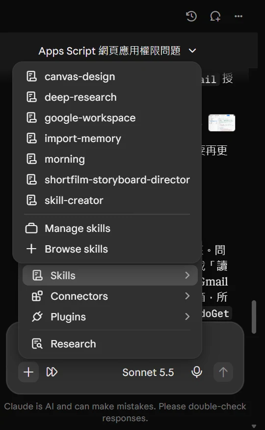
步驟 1／7（1）
Skills 清單：選設計類 Skill（實測 11/12 這個帳號沒有前端設計 Skill，改用講義的備援做法）
在側邊欄按輸入框左下「＋」→「Skills」，選設計類 Skill（例如 design）；清單裡沒有就跳到下一步，直接貼 prompt
應看到：輸入框出現 /design；實測 11/12 這個帳號沒有設計類 Skill，改用備援做法
任務十｜用 Skill 改善操作介面
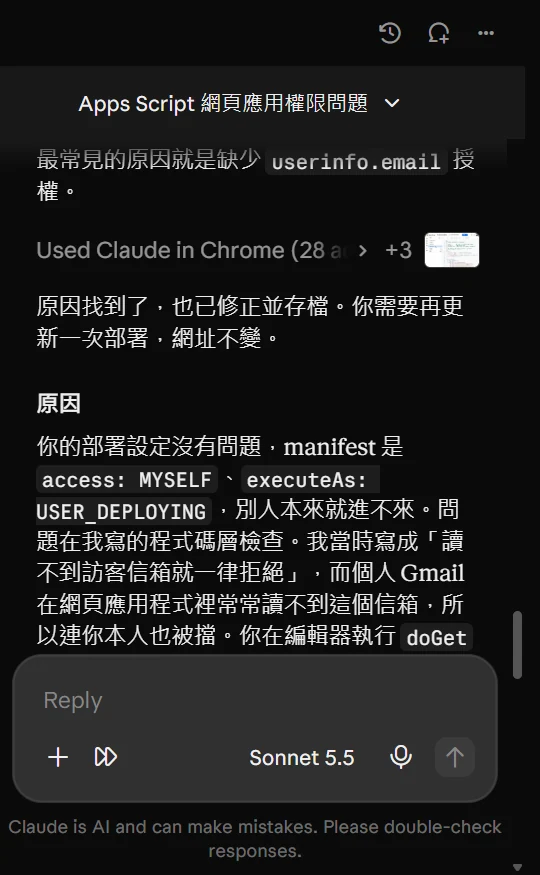
步驟 1／7（2）
側邊欄按「＋」→「Skills」
在側邊欄按輸入框左下「＋」→「Skills」，選設計類 Skill（例如 design）；清單裡沒有就跳到下一步，直接貼 prompt
應看到：輸入框出現 /design；實測 11/12 這個帳號沒有設計類 Skill，改用備援做法
任務十｜用 Skill 改善操作介面
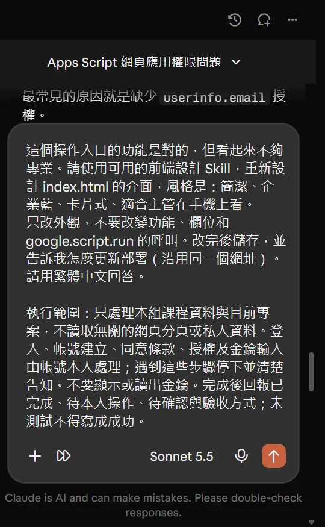
步驟 2／7
把風格【】換成你要的樣子，貼上任務十 prompt，按 Enter
講義複製任務十 prompt，把風格【】換成你要的樣子，接在 /design 後面貼上，按 Enter從講義複製 prompt
應看到：Claude 載入設計 Skill，開始改 index.html
任務十｜用 Skill 改善操作介面
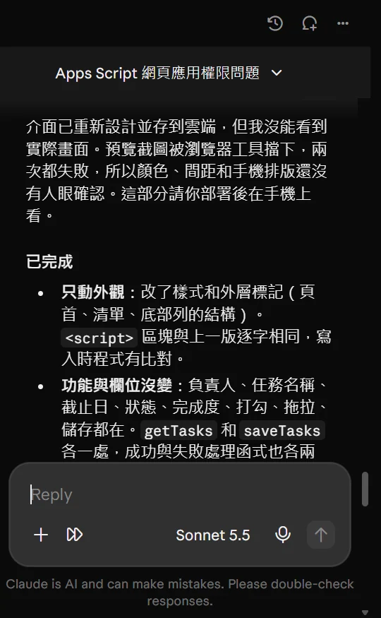
步驟 3／7
約 3 分鐘：Claude 只改外觀，並說明 <script> 與 google.script.run 呼叫都沒動
等待約 5 分鐘
應看到：Claude 回報只改外觀，並確認 google.script.run 呼叫與元件沒有變動
任務十｜用 Skill 改善操作介面
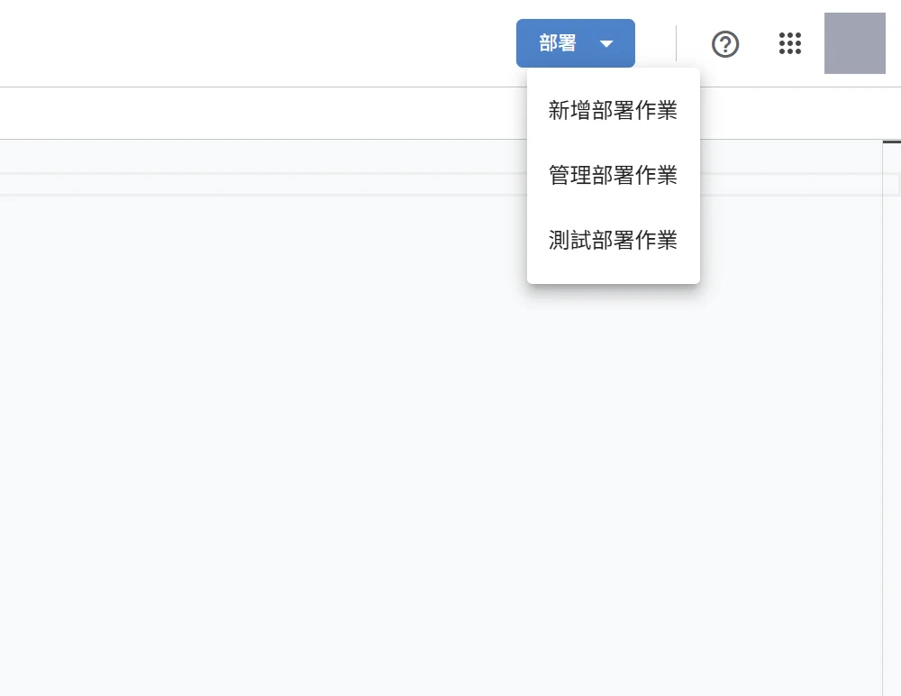
步驟 4／7
更新網頁：按「部署」→「管理部署作業」
本人按「部署」→「管理部署作業」→ 選操作入口那一筆 → 右上鉛筆「編輯」
應看到：出現版本設定
任務十｜用 Skill 改善操作介面
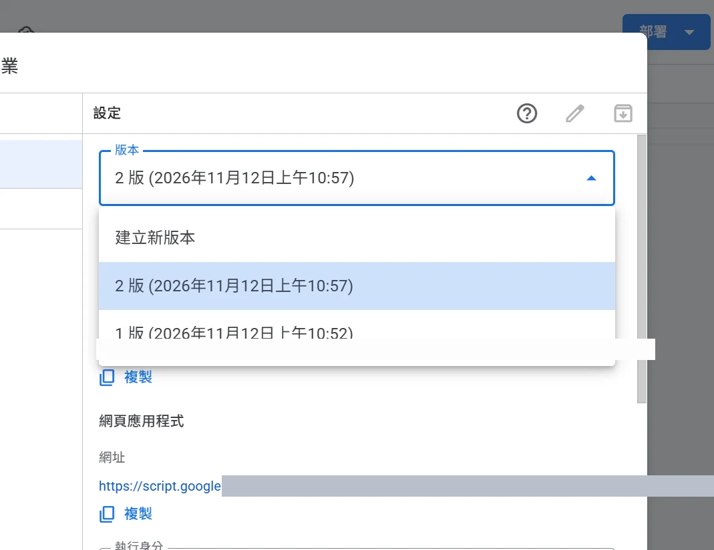
步驟 5／7（1）
在部署作業按鉛筆「編輯」→「版本」選「建立新版本」
本人「版本」選「建立新版本」→ 按「部署」
應看到：版本號加 1，網址不變
任務十｜用 Skill 改善操作介面
步驟 5／7（2）
更新完成：版本號加 1，網址不變
本人「版本」選「建立新版本」→ 按「部署」
應看到：版本號加 1，網址不變
任務十｜用 Skill 改善操作介面
步驟 6／7
手機重新整理入口網址：看到新設計（頁首深藍、白色卡片、粗進度條）
手機重新整理入口網址
應看到：看到新設計；深色模式手機也能閱讀
任務十｜用 Skill 改善操作介面
步驟 7／7（1）
回歸測試：把同一筆拖回 0%（同時還原測試資料）
本人回歸測試：選負責人、拖一筆完成度、按「儲存」，再核對試算表；測完改回原值
應看到：美化後查看、拖拉、儲存仍正常
任務十｜用 Skill 改善操作介面
步驟 7／7（2）
按「儲存」仍成功：美化後查看、拖拉、儲存都正常
本人回歸測試：選負責人、拖一筆完成度、按「儲存」，再核對試算表；測完改回原值
應看到：美化後查看、拖拉、儲存仍正常
任務十｜用 Skill 改善操作介面
任務十｜卡關怎麼辦？（1／2）
先對照症狀；卡住 3 分鐘請助教判斷，不要重複貼同一段 prompt。
| 看到這個狀況 | 這樣處理 |
|---|---|
| Skills 清單沒有設計類 Skill | 只從官方或信任來源取得 Skill；沒有時由講師示範，或不帶 Skill 直接貼 prompt。 |
| 手機還是舊畫面 | 確認做的是「管理部署作業 → 建立新版本」；重新整理或關掉分頁再開。 |
| 誤按「新增部署作業」 | 會得到新網址，原網址仍是舊版。改回用「管理部署作業」更新原部署，新網址不使用。 |
| 改版後不能儲存 | 在管理部署作業把版本切回上一版先恢復使用，再把錯誤告訴 Claude，請它對照舊版只修呼叫。 |
任務十｜用 Skill 改善操作介面
任務十｜卡關怎麼辦？（2／2）
先對照症狀；卡住 3 分鐘請助教判斷，不要重複貼同一段 prompt。
| 看到這個狀況 | 這樣處理 |
|---|---|
| 拖回 0% 後狀態仍是「進行中」 | 實測 11/12 發生過：到試算表用狀態下拉選單改回「未開始」，或請 Claude 調整狀態規則。 |
改版前 vs 改版後
同一個功能，載入設計 Skill 後：品牌標誌、統計卡片、狀態標籤、進度條

資安④
Skill 的來源要審
研究顯示：在 Skill 檔案裡藏指令，是新的攻擊手法（Skill-Inject, 2026）
Skill 可以夾帶程式和指令
它會影響 AI 的行為，惡意 Skill 可能讓 AI 偷傳資料或執行危險動作。
只裝可信來源
官方提供、公司 IT 審過、你信任的同事。Claude 官方說明：「只從可信任的來源安裝 Skill」。
裝之前看一眼
打開 SKILL.md 和附帶的檔案，看它要 AI 做什麼；看不懂就先不要裝。
延伸應用：Apps Script 還能幫經營者做什麼
每週一自動寄週報
彙整試算表各部門進度，每週一早上寄給主管群
請款與報價追蹤
逾期未付款自動提醒業務與財務
合約到期提醒
到期前 60 天、30 天自動通知負責人
表單自動分派
客戶詢問表單送出後，依地區自動指派業務
每日營運快照
每天早上把關鍵數字整理成一頁儀表板
檔案自動歸檔
附件自動存進對應客戶的雲端資料夾
全段驗收：每組用一筆任務走完
共25分鐘，已包含在本場配時。
- 5分鐘：找出測試任務，確認表格與日曆對應。
- 10分鐘：本人從手機更新，由另一人核對表格與日曆。
- 5分鐘：重跑同步，確認沒有重複事件。
- 5分鐘：留下入口網址、測試結果與仍未測的排程。
下午接續：哪些已通過，哪些還不知道
可現場確認
手機能開、能儲存，表格與日曆正確更新。
需要另外觀察
每日排程是否按時執行，須等實際觸發後才可確認。下午再加入LINE接收者與提醒。
下半場開始前：休息時確認
確認能接續即可；不是課後作業，也不用回報。
- 操作入口網址已存在帳號本人手機，能開啟並成功儲存一次。
- 帳號本人能登入 LINE Official Account Manager 與 LINE Developers。
- 自願接收者的手機在身邊、有網路。
- 看一次「設定 → 使用量」；額度剩不多先告訴助教。
上半場小結
1
自動化＝資料＋規則＋觸發
跟 AI 交代自動化，就是把這三件事講清楚。
2
授權畫面要看懂
自己寫的才按「前往」；權限和用途要對得上。
3
Skill 讓 AI 變專家
但來源要可信，裝之前看一眼。